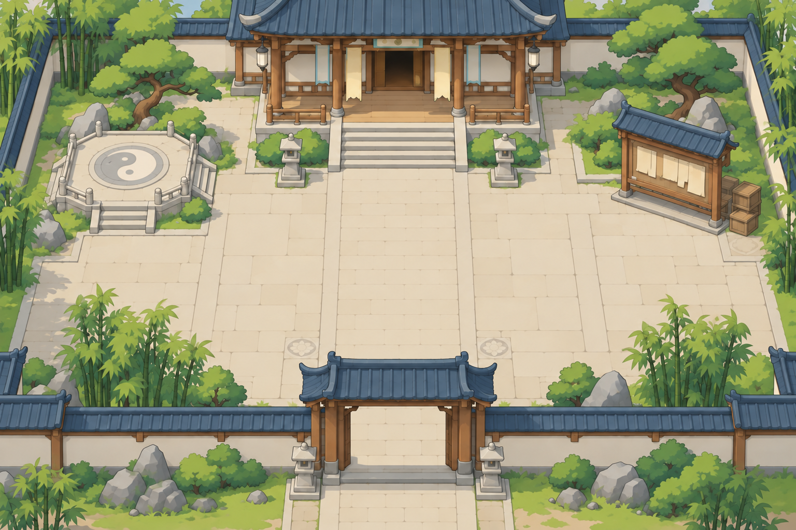
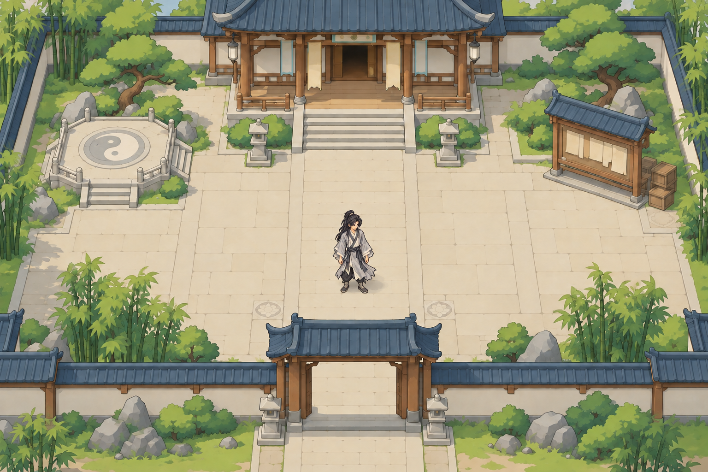

Vương Lâm pixel · Thử ghép trên nền môn phái
Nhân vật pixel art, nền stylized 2D, góc top-down ba phần tư. Bản xem trên dùng nền sân riêng và PNG Vương Lâm gốc, có thể đổi cỡ để đánh giá.
Đây là nghiên cứu hình trong GDD. Các nút thay đổi cách xem ảnh; chưa có di chuyển, va chạm hoặc animation. Cỡ dưới đây là khung ảnh PNG, chưa là lưới sprite native.
Khung sprite:
Phóng cảnh:
Khung xem:
Khung sprite 96 px; cảnh 1×; khung 960 × 640.

Môn phái · Nghiên cứu bố cục
Khung 360 px cắt vùng cảnh quanh nhân vật, giữ cỡ ảnh. Đây là phép xem tỷ lệ, chưa là UX mobile cuối cùng.
Ảnh ghép tham chiếu bằng imagegen
Ảnh dưới là một bản ghép riêng bằng imagegen. Trang xem phía trên giữ PNG nhân vật gốc làm một lớp riêng, giúp so sánh cỡ ảnh. Bố cục sân là thiết kế minh họa, chưa là bản đồ nguyên tác đã xác minh.

Prompt ghép · Nền riêng · Prompt nền · Hồ sơ thử